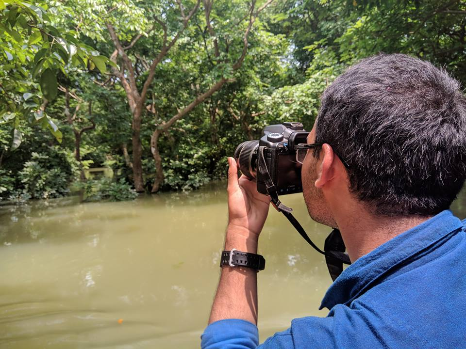
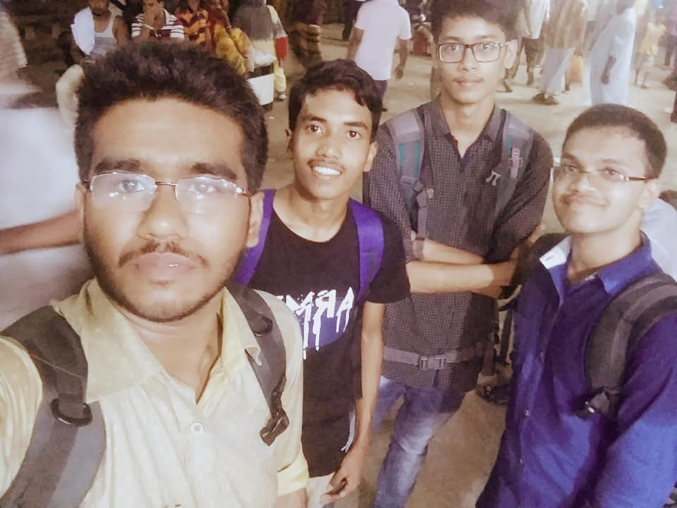

I am a student of Shaheed Ramizuddin Cantonment College. I have taken programming as my hobby & I hold a STRONG desire to take it as my profession. I, though not completely sure, am a regular student. I love to learn things. Learning something new is the most interesting thing for me. My favourite personalitiy is Dr. J N Islam.
I am an enthusiastic programmer. I can code in C, C++, Java®. If HTML, CSS, PHP was among programming languages, I would have included them also .
I have changed schools more than apprx. 14 times in my life. I never had a chance to study with the same classmates for more than 2 years.
This has enhanced my ability to cope up with new environment. I love photography. Cycling is also a favourite thing of me.
I am not very good at maths though...
Abdullah Ittabiul Muhammad Al Ibn Azamy Al Yeal Takian Protik
23RD of April, 2000 (But certificate shows 2002 )
Father is Jashim Uddin Azamy (Retd. Police Officer) and Mother is Shirin Jashim
Intermediate 2 ND Year on Science at Shaheed Ramizuddin Cantonment College
Aminul Islam, is among the most cheerful and calm friends of mine. Has a special ability to think to the (perhaps) deepest point of a phenomenon.
I prefer calling him Aminul. Attentive to study & A great vision for future is in his special attitude.
This is his Facebook profile.
Mujahidul Islam Rakib, Aged 18 (as of 2018), is not exactly calm, but full of cheerful stamina(!)
Not exactly healthy, but slender-tall body helps him to get traced easily. A Semi-online-maniac maybe the best word to describe him.
This is his Facebook profile.
His name describes his nature- "CALM". His attitude can be described as, "Helping" and "Cool".
He, is not very attentive. Laziness is also among his nature. But a good heart rests in him, that's assured (in sha Allah)
This is his Facebook profile.
This one is a national star. He won his Starship when he was awarded Bronze for his perfomence in National shooting Competition.
His height is what makes him much discriminative than others. Basically good-hearted. Constantly struggling and of high morale - that's enough to narrate him
This is his Facebook profile.
The Ever smiling friend of mine.
Deeply interested in IT. Has a passion for Web-Designing and Cyber-security.Relatively weak in programming.
He is never found standing by the road and gossiping with any one. Quite punctual, you can say. Have some revolutionary ideas (I assume)
This is his Facebook profile.
Student of Milestone. One of the very early acquaintances of me in Dhaka.
Usually Cool in nature, A heroish look (!), and an Ever-Sleepy boy to be found in the locality
Currrently he is staying a bit far from all of us. But staying in touch...
This is his Facebook profile.
A Tech-Lover and Brazillian supporter from the other section.
Good as a student, enthusiast as a learner, and a bit (luchu) in character. A great friend of mine.
Interested in Programming, skilled in utilizing resources. Very broad-minded..
This is his Facebook profile.

One of the best friend of mine.
A gentle and kind person by nature. Shares almost every secret with me. Anyone will hardly know, how much he has to say to everyone.
A "fighting-to-success" general, yet extraordinary personality from a middle-income family.
This is his Facebook profile.
This is Abdullah Mehedi. Studies in BUP.
Whenever I need any help, the first person to come in my mind is this one.
He has a IT Company of his own named Equation IT.
Though I do have a Youtube channel of my own, but I do not usually make content for that channel.
Rather one of my friend, Fuadul Islam has one named, "Shikkhangon". I make content for that.
This is one of my content, where I am talking about Lesson plan of the video tutorial's play-list
Throughout My entire life, I only have had 3 CRUSHES & 1 LOVE
I am not going to give details, but only Names if you want.
Want to see the names ?